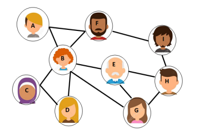

L'expérience de Milgram (1967) : (wikipédia)
Milgram envoie 60 lettres à des recrues de la ville d'Omaha dans le Nebraska. Il leur demande de faire suivre cette lettre à un agent de change, vivant à une adresse fournie, dans la ville de Sharon dans le Massachusetts. Les participants pouvaient seulement passer les lettres, de main à main, à des connaissances personnelles qu'ils pensaient être capables d'atteindre l'objectif, directement ou via les amis des amis. Le célèbre article de 1967 de Milgram décrit le fait qu'une lettre ne mit que quatre jours pour atteindre sa destination, mais négligea de mentionner que seulement 5 % des lettres réussirent à rejoindre leur cible.
On peut en conclure que nous ne sommes jamais très éloignés les uns des autres...
Voici un graphe qui modélise des liens entre des personnes. Comment interpréteriez-vous ce graphe ? |
Un graphe est constitué de sommets (nœuds) et d'arêtes (segments reliant deux sommets).
chaîne : Dans un graphe, une chaîne reliant un sommet x à un sommet y est définie par une suite finie d'arêtes consécutives, reliant x à y.
distance entre 2 sommets : La distance entre deux sommets d'un graphe est le nombre minimum d'arêtes d'une chaîne allant de l'un à l'autre.
écartement : L'écartement d'un sommet est la distance maximale existant entre ce sommet et les autres sommets du graphe.
centre : On appelle centre d'un graphe, le sommet d'écartement minimal. (le centre n'est pas nécessairement unique).
rayon : On appelle rayon d'un graphe , l'écartement d'un centre du graphe.
diamètre : On appelle diamètre d'un graphe , la distance maximale entre deux sommets du graphe .
Avec les précédentes définitions, déterminer le(s) centre(s), le rayon et le diamètre de ce graphe. | Zoom |
Un réseau social peut être représenté par un graphe.
Pour pouvoir par la suite manipuler un graphe avec un ordinateur, il faut choisir une représentation informatique.
Il s'agit d'un tableau à double entrée, dans lequel une case est cochée s'il y a une arête entre les sommets.
On écrira 0 s'il n'y a pas d'arête et 1 s'il y en a une
Recopier et compléter le tableau d'adjacence correspondant à ce graphe :
Le graphe |
Le tableau :
A | B | C | D | E | F | G | H | I | |
|---|---|---|---|---|---|---|---|---|---|
A | 0 | 1 | 0 | 0 | 0 | 1 | 0 | 0 | 0 |
B | |||||||||
C | |||||||||
D | |||||||||
E | |||||||||
F | |||||||||
G | |||||||||
H | |||||||||
I |